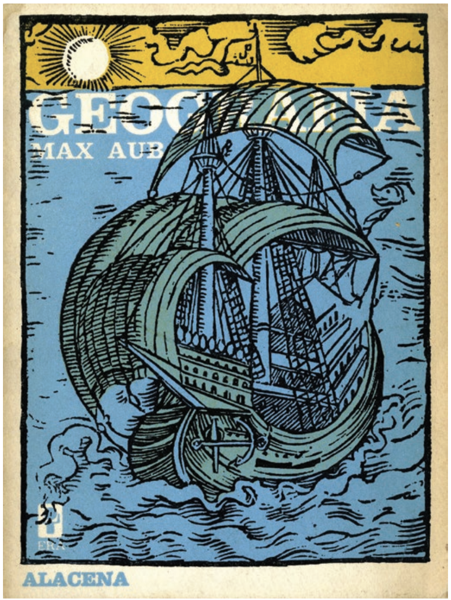
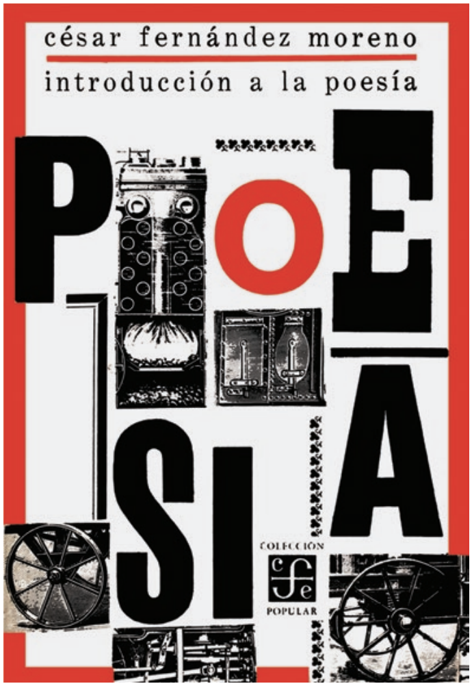
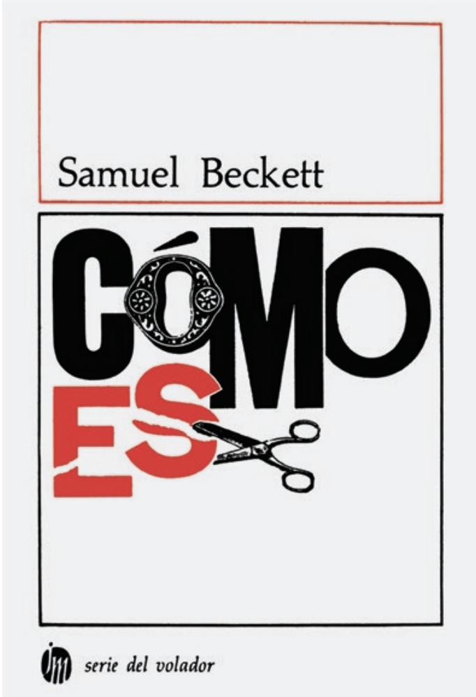

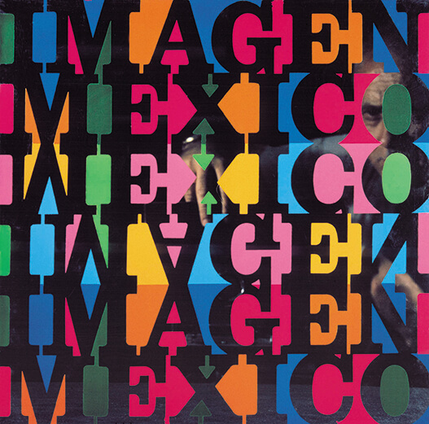
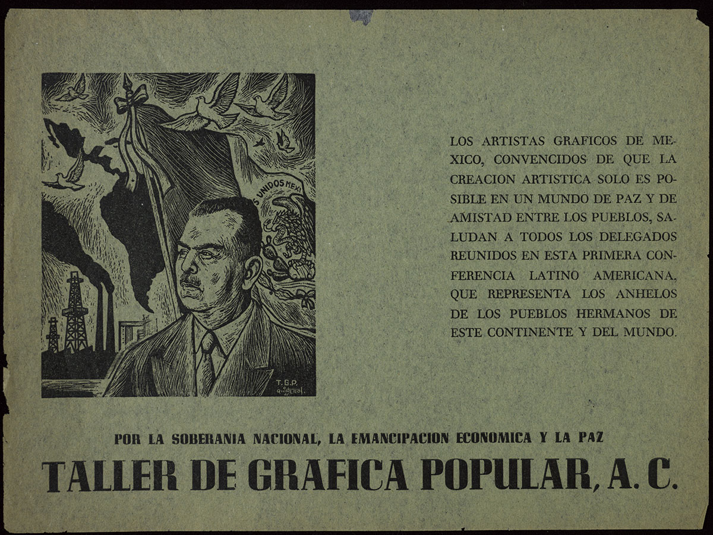
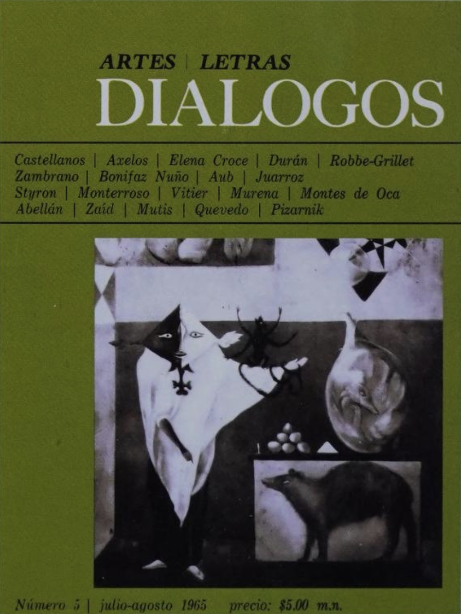
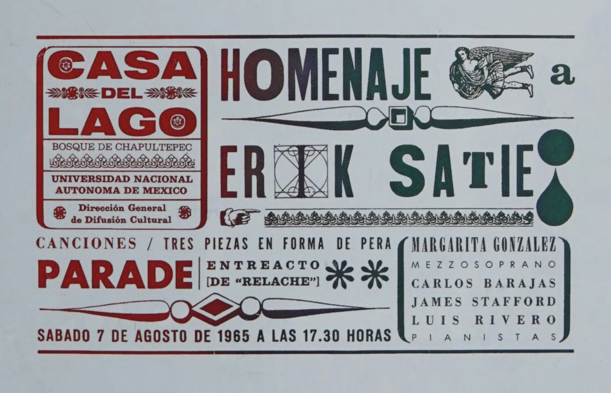
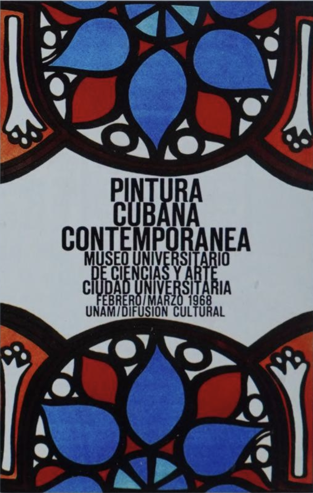
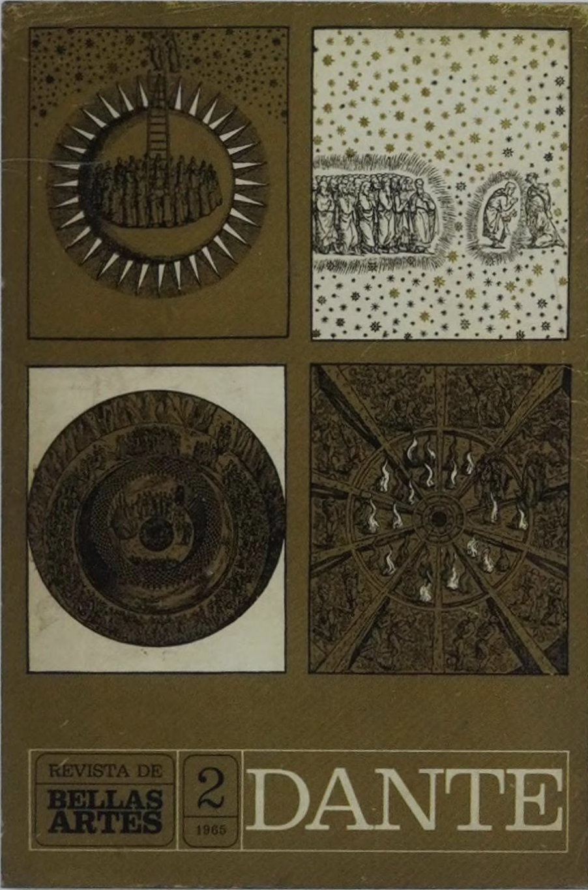
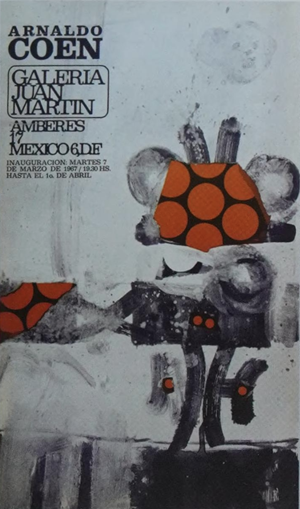
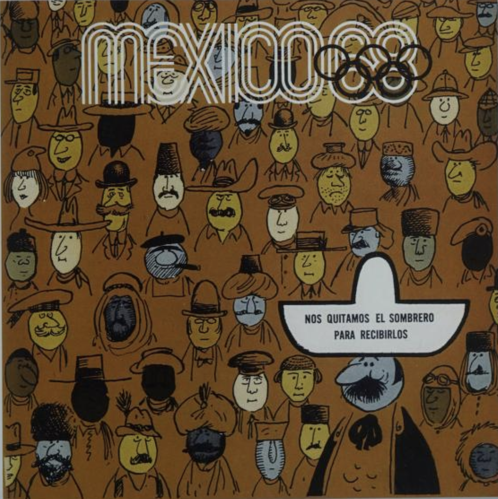
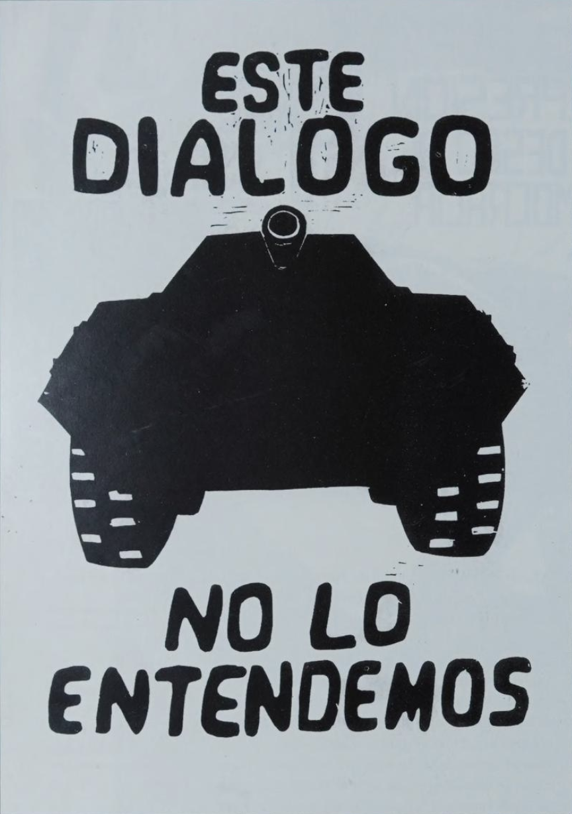
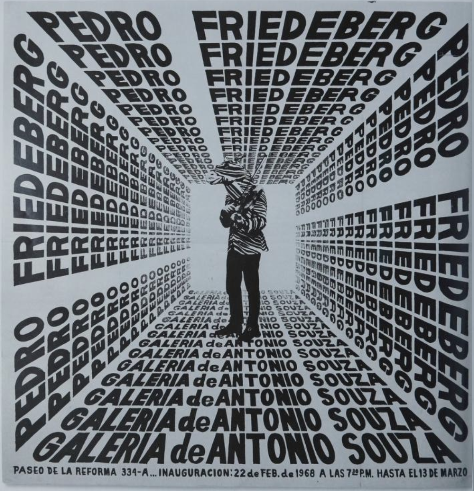
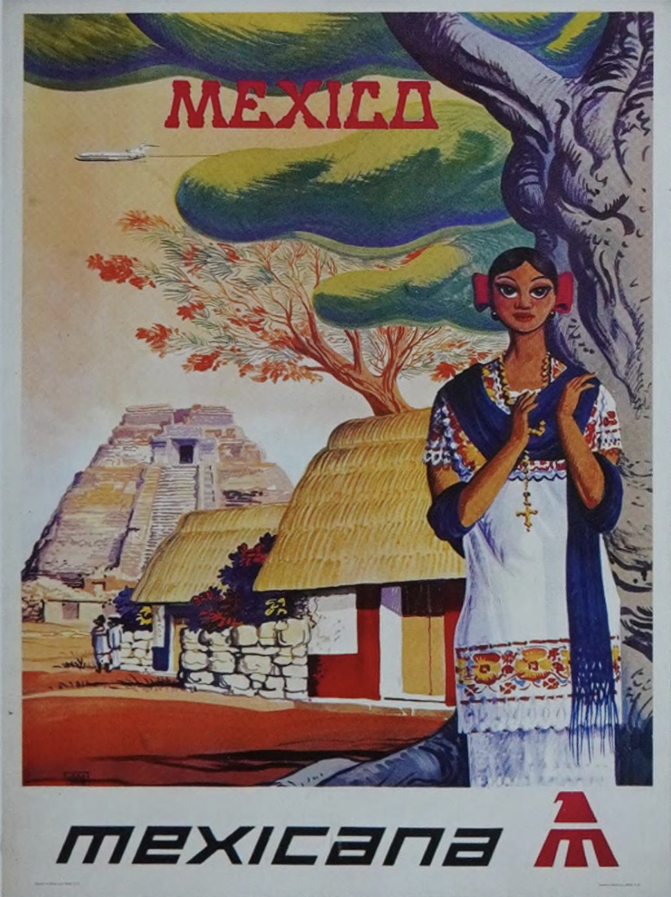
The 1960s marked a major shift with the development of strong visual identities and large-scale communication systems. The 1968 Olympic Games played a key role in shaping a modern visual language that combined international modernism with Mexican visual culture, including patterns, symbols, and typography. Designers such as Vicente Rojo and Eduardo Terrazas contributed to this period, helping define a visual identity that connected design with national culture and global modernism.













